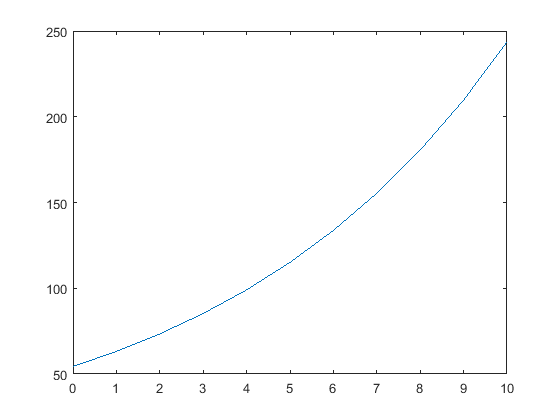
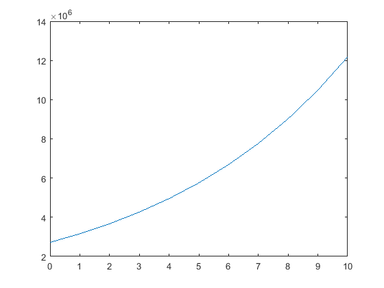

<!DOCTYPE html
  PUBLIC "-//W3C//DTD HTML 4.01 Transitional//EN">
<html><head>
      <meta http-equiv="Content-Type" content="text/html; charset=utf-8">
   <!--
This HTML was auto-generated from MATLAB code.
To make changes, update the MATLAB code and republish this document.
      --><title>Problem Set 2</title><meta name="generator" content="MATLAB 9.2"><link rel="schema.DC" href="http://purl.org/dc/elements/1.1/"><meta name="DC.date" content="2017-09-05"><meta name="DC.source" content="IanDoarn_EECE2207_ProblemSet2.m"><style type="text/css">
html,body,div,span,applet,object,iframe,h1,h2,h3,h4,h5,h6,p,blockquote,pre,a,abbr,acronym,address,big,cite,code,del,dfn,em,font,img,ins,kbd,q,s,samp,small,strike,strong,sub,sup,tt,var,b,u,i,center,dl,dt,dd,ol,ul,li,fieldset,form,label,legend,table,caption,tbody,tfoot,thead,tr,th,td{margin:0;padding:0;border:0;outline:0;font-size:100%;vertical-align:baseline;background:transparent}body{line-height:1}ol,ul{list-style:none}blockquote,q{quotes:none}blockquote:before,blockquote:after,q:before,q:after{content:'';content:none}:focus{outine:0}ins{text-decoration:none}del{text-decoration:line-through}table{border-collapse:collapse;border-spacing:0}

html { min-height:100%; margin-bottom:1px; }
html body { height:100%; margin:0px; font-family:Arial, Helvetica, sans-serif; font-size:10px; color:#000; line-height:140%; background:#fff none; overflow-y:scroll; }
html body td { vertical-align:top; text-align:left; }

h1 { padding:0px; margin:0px 0px 25px; font-family:Arial, Helvetica, sans-serif; font-size:1.5em; color:#d55000; line-height:100%; font-weight:normal; }
h2 { padding:0px; margin:0px 0px 8px; font-family:Arial, Helvetica, sans-serif; font-size:1.2em; color:#000; font-weight:bold; line-height:140%; border-bottom:1px solid #d6d4d4; display:block; }
h3 { padding:0px; margin:0px 0px 5px; font-family:Arial, Helvetica, sans-serif; font-size:1.1em; color:#000; font-weight:bold; line-height:140%; }

a { color:#005fce; text-decoration:none; }
a:hover { color:#005fce; text-decoration:underline; }
a:visited { color:#004aa0; text-decoration:none; }

p { padding:0px; margin:0px 0px 20px; }
img { padding:0px; margin:0px 0px 20px; border:none; }
p img, pre img, tt img, li img, h1 img, h2 img { margin-bottom:0px; } 

ul { padding:0px; margin:0px 0px 20px 23px; list-style:square; }
ul li { padding:0px; margin:0px 0px 7px 0px; }
ul li ul { padding:5px 0px 0px; margin:0px 0px 7px 23px; }
ul li ol li { list-style:decimal; }
ol { padding:0px; margin:0px 0px 20px 0px; list-style:decimal; }
ol li { padding:0px; margin:0px 0px 7px 23px; list-style-type:decimal; }
ol li ol { padding:5px 0px 0px; margin:0px 0px 7px 0px; }
ol li ol li { list-style-type:lower-alpha; }
ol li ul { padding-top:7px; }
ol li ul li { list-style:square; }

.content { font-size:1.2em; line-height:140%; padding: 20px; }

pre, code { font-size:12px; }
tt { font-size: 1.2em; }
pre { margin:0px 0px 20px; }
pre.codeinput { padding:10px; border:1px solid #d3d3d3; background:#f7f7f7; }
pre.codeoutput { padding:10px 11px; margin:0px 0px 20px; color:#4c4c4c; }
pre.error { color:red; }

@media print { pre.codeinput, pre.codeoutput { word-wrap:break-word; width:100%; } }

span.keyword { color:#0000FF }
span.comment { color:#228B22 }
span.string { color:#A020F0 }
span.untermstring { color:#B20000 }
span.syscmd { color:#B28C00 }

.footer { width:auto; padding:10px 0px; margin:25px 0px 0px; border-top:1px dotted #878787; font-size:0.8em; line-height:140%; font-style:italic; color:#878787; text-align:left; float:none; }
.footer p { margin:0px; }
.footer a { color:#878787; }
.footer a:hover { color:#878787; text-decoration:underline; }
.footer a:visited { color:#878787; }

table th { padding:7px 5px; text-align:left; vertical-align:middle; border: 1px solid #d6d4d4; font-weight:bold; }
table td { padding:7px 5px; text-align:left; vertical-align:top; border:1px solid #d6d4d4; }


  </style></head><body><div class="content"><h1>Problem Set 2</h1><!--introduction--><p>Ian Doarn 9/5/2017</p><!--/introduction--><h2>Contents</h2><div><ul><li><a href="#1">Problem 1</a></li><li><a href="#2">Problem 2</a></li><li><a href="#3">Problem 3</a></li><li><a href="#4">Problem 4</a></li><li><a href="#5">a)</a></li><li><a href="#6">b)</a></li><li><a href="#7">Problem 5</a></li></ul></div><h2 id="1">Problem 1</h2><p>315 people have to be transported using buses that have 37 seats. By typing one line (command) in the Command Window, calculate how many seats will remain empty if enough buses with the order to transport all the people. (Hint: use Matlab built in function ceil.)</p><pre class="codeinput">remainingSeats = ceil(315 / (37 * 9));
disp(<span class="string">"Remaining Seats = "</span> + remainingSeats);
</pre><pre class="codeoutput">Remaining Seats = 1
</pre><h2 id="2">Problem 2</h2><p>assign the number 316,501.6732 a and calculate the following by typing one command:</p><p>(a) Round the number to the nearest hundredth.</p><p>(b) Round the number to the nearest thousand</p><pre class="codeinput"><span class="comment">% a)</span>
fprintf(<span class="string">'%.2f\n'</span>, 316501.6732)
<span class="comment">% b)</span>
fprintf(<span class="string">'%.3f\n'</span>, 316501.6732)
</pre><pre class="codeoutput">316501.67
316501.673
</pre><h2 id="3">Problem 3</h2><p>The number of combinations Cn;r of taking r object out of n objects is given by</p><p>a) Determine how many combinations are possible in a lottery game for selecting 6 numbers that are drawn out for 49.</p><p>b) Using the following formula, determine the probability of guessing two out of the six drawn numbers</p><pre class="codeinput"><span class="comment">% A</span>
((factorial(49)) / (factorial(6)*factorial(49-6)))
<span class="comment">%</span>
<span class="comment">% B</span>
x = ((factorial(6)) / (factorial(2)*factorial(6-2)));
y = ((factorial(43)) / (factorial(4)*factorial(43-4)));
z = ((factorial(49)) / (factorial(6)*factorial(49-6)));
(x*y) / z
</pre><pre class="codeoutput">
ans =

    13983816


ans =

      0.13238

</pre><h2 id="4">Problem 4</h2><p>The spread of a computer virus through a computer network can be modeled by</p><p>N(t) = 20e0:15t</p><p>where N(t) is the number of computers infected and t time in minutes.</p><p>a) Determine how long it takes for the number of infected computers to double</p><p>b) Determine how long it takes for 1 million computers to be infected.</p><h2 id="5">a)</h2><pre class="codeinput">time = 0:10;
e = exp(1);
numComp = 20*e*exp(0.15*time);
plot(time, numComp);
</pre> <h2 id="6">b)</h2><pre class="codeinput">time2 = 0:10;
e2 = exp(1);
N2 = 1000000;
numComp2 = N2*e*exp(0.15*time2);
plot(time2, numComp2);
</pre> <h2 id="7">Problem 5</h2><p>The voltage dierence Vab between two points a and b in the Wheatstone Bridge circuit is:  Calculate the voltage dierence when V = 14 volts, R1 = 120.5 , R2 = 119.3, R3 = 121.2, and R4 = 118.8</p><pre class="codeinput">V = 14;
R1 = 120.5;
R2 = 119.3;
R3 = 121.2;
R4 = 118.8;

V_ab = V*((R1*R3-R2*R4)/((R1+R2)*(R3+R4)));

disp(<span class="string">"V_ab = "</span> + V_ab)
</pre><pre class="codeoutput">V_ab = 0.10503
</pre><p class="footer"><br><a href="http://www.mathworks.com/products/matlab/">Published with MATLAB&reg; R2017a</a><br></p></div><!--
##### SOURCE BEGIN #####
%% Problem Set 2
% Ian Doarn
% 9/5/2017

%% Problem 1
% 315 people have to be transported using buses that have 37 seats. By typing
% one line (command) in the Command Window, calculate how many seats will
% remain empty if enough buses with the order to transport all the people. (Hint:
% use Matlab built in function ceil.)

remainingSeats = ceil(315 / (37 * 9));
disp("Remaining Seats = " + remainingSeats);

%% Problem 2
% assign the number 316,501.6732 a and calculate the following by typing one
% command:
%
% (a) Round the number to the nearest hundredth.
%
% (b) Round the number to the nearest thousand
%

% a)
fprintf('%.2f\n', 316501.6732)
% b)
fprintf('%.3f\n', 316501.6732)


%% Problem 3
% The number of combinations Cn;r of taking r object out of n objects is given by
%
% a) Determine how many combinations are possible in a lottery game for selecting 6 numbers that are drawn out for 49.
% 
% b) Using the following formula, determine the probability of guessing two out of the six drawn numbers
%

% A
((factorial(49)) / (factorial(6)*factorial(49-6)))
%
% B
x = ((factorial(6)) / (factorial(2)*factorial(6-2)));
y = ((factorial(43)) / (factorial(4)*factorial(43-4)));
z = ((factorial(49)) / (factorial(6)*factorial(49-6)));
(x*y) / z


%% Problem 4
% The spread of a computer virus through a computer network can be modeled by
%
% N(t) = 20e0:15t
% 
% where N(t) is the number of computers infected and t time in minutes.
%
% a) Determine how long it takes for the number of infected computers to double
%
% b) Determine how long it takes for 1 million computers to be infected.

%% a)
time = 0:10;
e = exp(1);
numComp = 20*e*exp(0.15*time);
plot(time, numComp);

%% b)
time2 = 0:10;
e2 = exp(1);
N2 = 1000000;
numComp2 = N2*e*exp(0.15*time2);
plot(time2, numComp2);


%% Problem 5
% The voltage dierence Vab between two points a and b in the Wheatstone Bridge circuit is:
% 
% Calculate the voltage dierence when V = 14 volts, R1 = 120.5 , R2 = 119.3, R3 = 121.2, and R4 = 118.8

V = 14;
R1 = 120.5;
R2 = 119.3;
R3 = 121.2;
R4 = 118.8;

V_ab = V*((R1*R3-R2*R4)/((R1+R2)*(R3+R4)));

disp("V_ab = " + V_ab)

##### SOURCE END #####
--></body></html>